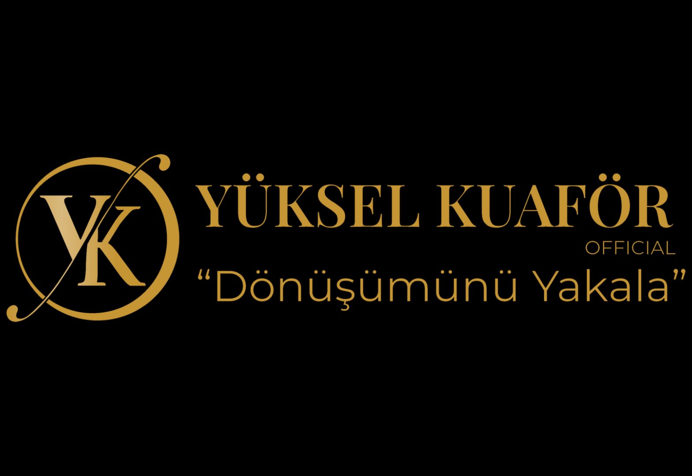

Hakkımda

Yazılım alanında çalışan bir yazılımcı olarak, ilgi alanlarım oldukça çeşitlidir. Ben, programlama dilleriyle çalışmayı ve onları öğrenmeyi seviyorum. Özellikle Python, JavaScript, Java, C++ ve C# gibi popüler dillerde kendimi geliştirmekten büyük keyif alıyorum. Bu dillerle projeler oluşturmak ve kodları optimize etmek benim için heyecan verici bir deneyimdir. Veri yapıları ve algoritmalar benim için yazılım geliştirme sürecinde temel bir yer tutar. Bu konulara olan ilgim, verimli ve optimize edilmiş çözümler üretmek için sürekli araştırma yapmamı sağlar. Veri yapılarını anlamak ve algoritmaları doğru bir şekilde uygulamak, yazılım projelerimin performansını artırmak için önemlidir. Web geliştirme de ilgi duyduğum bir alan olarak öne çıkar. Web teknolojileri hızla gelişiyor ve sürekli yenilikler ortaya çıkıyor. Bu nedenle, web uygulamaları ve siteler oluşturmak benim için büyük bir motivasyon kaynağıdır. HTML, CSS ve JavaScript gibi temel web teknolojileriyle çalışmayı seviyorum ve kullanıcı dostu, etkileşimli ve güzel arayüzler tasarlamak benim için büyük bir tatmin kaynağıdır. Sonuç olarak, programlama dilleri, veri yapıları ve algoritmalar ile web geliştirme benim yazılımcı olarak ilgi alanlarımı oluşturuyor. Bu alanlarda kendimi sürekli geliştirmek ve yeni teknolojileri takip etmek benim için önemlidir. Bu şekilde, yazılım projelerimi daha etkili, verimli ve kullanıcı dostu hale getirebilirim.
Deneyim

WEB DEVELOPER
Birçok programlama dili ve teknolojiye hakimim. Özellikle HTML, CSS, JavaScript ve PHP gibi web geliştirme araçlarıyla uzun süredir çalışıyorum. Aynı zamanda popüler CMS'lerden biri olan WordPress'i de etkin bir şekilde kullanıyorum.
Grafik Tasarım
yaratıcı düşünceyi hayata geçirmek için tutkulu bir kişiyim. Estetik anlayışım ve teknik becerilerimle, görsel iletişimde etkileyici ve anlamlı deneyimler yaratmaya odaklanıyorum. Tasarım sürecine her adımında özenle yaklaşıyorum, kullanıcıların ihtiyaçlarını anlamak ve onları ilgi çekici ve kullanıcı dostu çözümlerle buluşturmak benim için önceliklidir. Araştırma, analiz, prototipleme ve kullanıcı geri bildirimleriyle iteratif bir yaklaşım benimsemiş olup, her proje için en iyi sonucu elde etmek için sürekli olarak gelişmeye odaklanıyorum. Tasarım alanında deneyimlerim ve becerilerim çeşitli disiplinleri içerir. Web tasarımı, kullanıcı arayüzü tasarımı, grafik tasarımı ve marka kimliği gibi konularda çalışmalar yaptım. Aynı zamanda prototipleme araçları ve tasarım programları konusunda da yetkinim. İşbirliği ve iletişim becerilerimle, ekiplerle uyumlu çalışır ve paydaşlarla etkili bir şekilde iletişim kurarım. Yaratıcı çözümler üretmek için farklı perspektifleri bir araya getirir ve tasarımda sürekli olarak ilham bulurum.

Veri Analizi
Python'u veri analizi süreçlerinde etkin bir şekilde kullanarak, büyük veri setlerini analiz etme, veri temizleme, görselleştirme, tahminleme ve modelleme gibi görevleri başarıyla gerçekleştiriyorum. Pandas, NumPy, Matplotlib, Seaborn ve SciPy gibi Python kütüphanelerini kullanarak veri manipülasyonu ve analizi için güçlü araçlara sahibim.
Ayrıca, veri tabanlarıyla çalışma becerilerine de sahibim ve SQL diliyle veri çekme, sorgulama ve manipülasyon yapabilirim. Verileri depolama ve yönetme amacıyla kullanılan araçlar hakkında da bilgi sahibiyim.
İşler

SOSYAL MEDYA YÖNETİMİ
Sosyal medya alanında geniş bir deneyime sahibim ve markaların hedef kitleleriyle bağlantı kurmalarına yardımcı olacak etkili sosyal medya stratejileri geliştirmekte uzmanım. Facebook, Instagram, Twitter, LinkedIn ve diğer popüler sosyal medya platformları üzerinde güncel trendleri takip ederek, markaların hedeflerine uygun içerik üretimini sağlıyorum.
İnstagram Hesabına Gitmek için tıklayınız

Web Site Tasarımı
Birçok programlama dili ve teknolojiye hakimim. Özellikle HTML, CSS, JavaScript ve PHP gibi web geliştirme araçlarıyla uzun süredir çalışıyorum. Aynı zamanda popüler CMS'lerden biri olan WordPress'i de etkin bir şekilde kullanıyorum.
Örnek Web Sitesi İçin Tıklayınız.
Veri Analizi Ve Büyük Veri
Python'u veri analizi süreçlerinde etkin bir şekilde kullanarak, büyük veri setlerini analiz etme, veri temizleme, görselleştirme, tahminleme ve modelleme gibi görevleri başarıyla gerçekleştiriyorum. Pandas, NumPy, Matplotlib, Seaborn ve SciPy gibi Python kütüphanelerini kullanarak veri manipülasyonu ve analizi için güçlü araçlara sahibim.
Ayrıca, veri tabanlarıyla çalışma becerilerine de sahibim ve SQL diliyle veri çekme, sorgulama ve manipülasyon yapabilirim. Verileri depolama ve yönetme amacıyla kullanılan araçlar hakkında da bilgi sahibiyim.